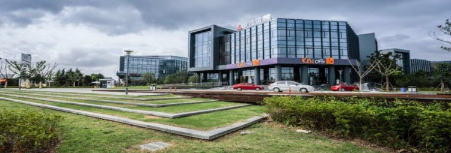

上海金融谷位于上海嘉定工业区城北路1818号，前期规划用地1000亩，建筑面积100万㎡，总投资额达86亿元，分两大集群建设。
其中第一集群500亩，建筑面积逾50万㎡，总投资额将达40亿元，预计项目全面投产后带来相关产业产值超过100亿元，带动安排就业岗位将超过15000个。第一集群四至：东至嘉唐公路，南至茄子泾，西至城北路，北至沥红路。第一集群A、B、C区用地近200亩，建筑面积20万㎡，地块位置东至娄红路、南至汇善路、西至城北路、北至基地边界，其中娄红路、汇善路为规划市政路，城北路为现有的城市干道。
上海金融谷于2012年底正式启动，金融服务外包基地的建设工作已经拉开了序幕，第一期A区6.8万㎡30幢独栋办公墅于2014年10月前交付入驻，3~5年内将完成第一个50万㎡ 集群建设。